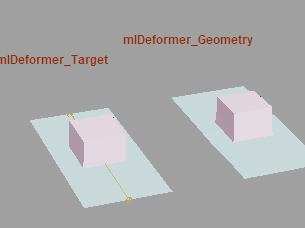
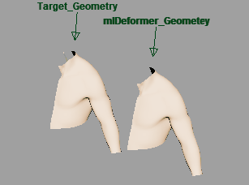

重要： 在您训练 ML 变形器时，系统可能会提示您下载并安装外部 Python 模块。默认情况下，附加模块的安装路径为 <MAYA_APP_DIR>/mlDeformer/<ml_deformer_version>/Lib/site-packages。如果需要手动下载这些模块和/或将其安装到自定义位置，请参见安装 Python 库以训练 ML 变形器，了解如何执行此操作。

使用 ML 变形器将复杂变形从目标模型传递到网格
ML 变形器可读取复杂的变形系统，并通过训练和使用机器学习模型，学会以更轻、更便捷的方式来表示和近似这些系统。
ML 变形器的工作方式是从提供目标几何体广泛运动的动画序列中学习。此动画序列可以包含运动捕捉数据、现有关键帧动画、通过 ML 变形器的“姿势生成”(Pose Generation)和主形状(Principal Shapes)功能进行的随机化或所有技术的组合。此示例数据以及影响每个帧上姿势的驱动者控制的值，将用于训练 ML 模型。
经过训练后，原始变形的近似效率会大大提高，从而改善动画制作时的交互性，或在群组场景中使用时加快渲染速度。可以在 ML 变形器和原始复杂源变形器之间切换，以在设置动画过程中使用近似，同时在最终渲染期间使用复杂变形器以获得最佳结果。
提示： 可以在内容浏览器中测试和试验 ML 变形器示例文件（“窗口 > 内容浏览器 > 示例 > 动画 > ML 变形器”(Windows > Content Browser > Examples > Animation > ML Deformer)）。

在内容浏览器中对 ML 变形器动画进行采样
注：
以下限制适用于 ML 变形器：
- 根据绑定的不同，在某些情况下，将“增量模式”(Delta Mode)设置为“曲面”(Surface)可能会产生瑕疵和不正确的锯齿变形。这种情况发生在曲面顶点帧的计算不一致时，通常是由于某些姿势中的顶点重叠。如果从训练集中删除不良姿势，结果可能会有所改善。但是，在经过训练后，ML 变形器在这些姿势和类似姿势上的性能仍然较差。
- 在经过大量控件的训练后，ML 模型往往会学习控件与网格无关部分的变形之间的错误关联。对同时触发较少控件的姿势进行训练有助于解决这个问题。
基本工作流程
创建 ML 变形器可分为几个主要步骤：
- 将 ML 变形器添加到要变形的几何体
- 在变形堆栈中，在变形器之前重新排列 ML 变形器以进行近似
- 基于这些变形器创建目标。
有关逐步说明，请参见创建 ML 变形器。
您也可以将源对象和目标对象与 ML 变形器一起使用，以近似复杂变形：
- 将 ML 变形器添加并指定给源对象。
- 配置并指定驱动者控制以影响姿势和相应的复杂/原始变形。
- 使用现有动画或生成随机姿势，并将其导出为训练数据以供模型学习。请参见 ML 变形器“导出训练数据”(Export Training Data)窗口。
- 配置训练参数并训练模型。请参见 ML 变形器训练设置。
有关逐步说明，请参见使用单独的目标几何体创建 ML 变形器。